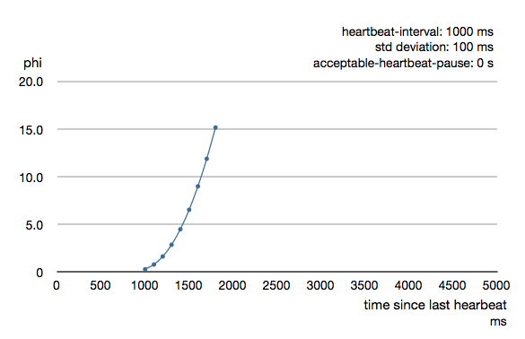

Remoting
Remoting is the mechanism by which Actors on different nodes talk to each other internally.
When building an Akka application, you would usually not use the Remoting concepts directly, but instead use the more high-level Akka Cluster utilities or technology-agnostic protocols such as HTTP, gRPC etc.
If migrating from classic remoting see what’s new in Artery
Dependency
To use Remoting, you must add the following dependency in your project:
- sbt
val AkkaVersion = "2.8.1" libraryDependencies += "com.typesafe.akka" %% "akka-remote" % AkkaVersion- Maven
<properties> <scala.binary.version>2.13</scala.binary.version> </properties> <dependencyManagement> <dependencies> <dependency> <groupId>com.typesafe.akka</groupId> <artifactId>akka-bom_${scala.binary.version}</artifactId> <version>2.8.1</version> <type>pom</type> <scope>import</scope> </dependency> </dependencies> </dependencyManagement> <dependencies> <dependency> <groupId>com.typesafe.akka</groupId> <artifactId>akka-remote_${scala.binary.version}</artifactId> </dependency> </dependencies>- Gradle
def versions = [ ScalaBinary: "2.13" ] dependencies { implementation platform("com.typesafe.akka:akka-bom_${versions.ScalaBinary}:2.8.1") implementation "com.typesafe.akka:akka-remote_${versions.ScalaBinary}" }
One option is to use Artery with Aeron, see Selecting a transport. The Aeron dependency needs to be explicitly added if using the aeron-udp transport:
- sbt
libraryDependencies ++= Seq( "io.aeron" % "aeron-driver" % "1.40.0", "io.aeron" % "aeron-client" % "1.40.0" )- Maven
<dependencies> <dependency> <groupId>io.aeron</groupId> <artifactId>aeron-driver</artifactId> <version>1.40.0</version> </dependency> <dependency> <groupId>io.aeron</groupId> <artifactId>aeron-client</artifactId> <version>1.40.0</version> </dependency> </dependencies>- Gradle
dependencies { implementation "io.aeron:aeron-driver:1.40.0" implementation "io.aeron:aeron-client:1.40.0" }
When using Aeron with Java 17 you have to add JVM flag --add-opens=java.base/sun.nio.ch=ALL-UNNAMED.
Configuration
To enable remote capabilities in your Akka project you should, at a minimum, add the following changes to your application.conf file:
akka {
actor {
# provider=remote is possible, but prefer cluster
provider = cluster
}
remote {
artery {
transport = tcp # See Selecting a transport below
canonical.hostname = "127.0.0.1"
canonical.port = 25520
}
}
}
As you can see in the example above there are four things you need to add to get started:
- Change provider from
local. We recommend using Akka Cluster over using remoting directly. - Enable Artery to use it as the remoting implementation
- Add host name - the machine you want to run the actor system on; this host name is exactly what is passed to remote systems in order to identify this system and consequently used for connecting back to this system if need be, hence set it to a reachable IP address or resolvable name in case you want to communicate across the network.
- Add port number - the port the actor system should listen on, set to 0 to have it chosen automatically
The port number needs to be unique for each actor system on the same machine even if the actor systems have different names. This is because each actor system has its own networking subsystem listening for connections and handling messages as not to interfere with other actor systems.
The example above only illustrates the bare minimum of properties you have to add to enable remoting. All settings are described in Remote Configuration.
Introduction
We recommend Akka Cluster over using remoting directly. As remoting is the underlying module that allows for Cluster, it is still useful to understand details about it though.
Remoting enables Actor systems on different hosts or JVMs to communicate with each other. By enabling remoting the system will start listening on a provided network address and also gains the ability to connect to other systems through the network. From the application’s perspective there is no API difference between local or remote systems, ActorRefActorRef instances that point to remote systems look exactly the same as local ones: they can be sent messages to, watched, etc. Every ActorRef contains hostname and port information and can be passed around even on the network. This means that on a network every ActorRef is a unique identifier of an actor on that network.
You need to enable serialization for your actor messages. Serialization with Jackson is a good choice in many cases and our recommendation if you don’t have other preference.
Remoting is not a server-client technology. All systems using remoting can contact any other system on the network if they possess an ActorRef pointing to those system. This means that every system that is remoting enabled acts as a “server” to which arbitrary systems on the same network can connect to.
Selecting a transport
There are three alternatives of which underlying transport to use. It is configured by property akka.remote.artery.transport with the possible values:
tcp- Based on Akka Streams TCP (default if other not configured)tls-tcp- Same astcpwith encryption using Akka Streams TLSaeron-udp- Based on Aeron (UDP)
If you are uncertain of what to select a good choice is to use the default, which is tcp.
The Aeron (UDP) transport is a high performance transport and should be used for systems that require high throughput and low latency. It uses more CPU than TCP when the system is idle or at low message rates. There is no encryption for Aeron.
The TCP and TLS transport is implemented using Akka Streams TCP/TLS. This is the choice when encryption is needed, but it can also be used with plain TCP without TLS. It’s also the obvious choice when UDP can’t be used. It has very good performance (high throughput and low latency) but latency at high throughput might not be as good as the Aeron transport. It has less operational complexity than the Aeron transport and less risk of trouble in container environments.
Aeron requires 64bit JVM to work reliably and is only officially supported on Linux, Mac and Windows. It may work on other Unixes e.g. Solaris but insufficient testing has taken place for it to be officially supported. If you’re on a Big Endian processor, such as Sparc, it is recommended to use TCP.
Rolling update is not supported when changing from one transport to another.
Migrating from classic remoting
See migrating from classic remoting
Canonical address
In order for remoting to work properly, where each system can send messages to any other system on the same network (for example a system forwards a message to a third system, and the third replies directly to the sender system) it is essential for every system to have a unique, globally reachable address and port. This address is part of the unique name of the system and will be used by other systems to open a connection to it and send messages. This means that if a host has multiple names (different DNS records pointing to the same IP address) then only one of these can be canonical. If a message arrives to a system but it contains a different hostname than the expected canonical name then the message will be dropped. If multiple names for a system would be allowed, then equality checks among ActorRefActorRef instances would no longer to be trusted and this would violate the fundamental assumption that an actor has a globally unique reference on a given network. As a consequence, this also means that localhost addresses (e.g. 127.0.0.1) cannot be used in general (apart from local development) since they are not unique addresses in a real network.
In cases, where Network Address Translation (NAT) is used or other network bridging is involved, it is important to configure the system so that it understands that there is a difference between his externally visible, canonical address and between the host-port pair that is used to listen for connections. See Akka behind NAT or in a Docker container for details.
Acquiring references to remote actors
In order to communicate with an actor, it is necessary to have its ActorRefActorRef. In the local case it is usually the creator of the actor (the caller of actorOf()) is who gets the ActorRef for an actor that it can then send to other actors. In other words:
- An Actor can get a remote Actor’s reference by receiving a message from it (as it’s available as
sender()getSender()then), or inside of a remote message (e.g. PleaseReply(message: String, remoteActorRef: ActorRef))
Alternatively, an actor can look up another located at a known path using ActorSelectionActorSelection. These methods are available even in remoting enabled systems:
- Remote Lookup : used to look up an actor on a remote node with
actorSelection(path)actorSelection(path) - Remote Creation : used to create an actor on a remote node with
actorOf(Props(...), actorName)actorOf(Props(...), actorName)
In the next sections the two alternatives are described in detail.
Looking up Remote Actors
actorSelection(path)actorSelection(path) will obtain an ActorSelectionActorSelection to an Actor on a remote node, e.g.:
- Scala
-
val selection = context.actorSelection("akka://actorSystemName@10.0.0.1:25520/user/actorName") - Java
-
ActorSelection selection = context.actorSelection("akka://actorSystemName@10.0.0.1:25520/user/actorName");
As you can see from the example above the following pattern is used to find an actor on a remote node:
akka://<actor system>@<hostname>:<port>/<actor path>
Unlike with earlier remoting, the protocol field is always akka as pluggable transports are no longer supported.
Once you obtained a selection to the actor you can interact with it in the same way you would with a local actor, e.g.:
- Scala
-
selection ! "Pretty awesome feature" - Java
-
selection.tell("Pretty awesome feature", getSelf());
To acquire an ActorRefActorRef for an ActorSelectionActorSelection you need to send a message to the selection and use the sender()getSender() reference of the reply from the actor. There is a built-in IdentifyIdentify message that all Actors will understand and automatically reply to with a ActorIdentityActorIdentity message containing the ActorRef. This can also be done with the resolveOneresolveOne method of the ActorSelection, which returns a FutureCompletionStage of the matching ActorRef.
For more details on how actor addresses and paths are formed and used, please refer to Actor References, Paths and Addresses.
Message sends to actors that are actually in the sending actor system do not get delivered via the remote actor ref provider. They’re delivered directly, by the local actor ref provider.
Aside from providing better performance, this also means that if the hostname you configure remoting to listen as cannot actually be resolved from within the very same actor system, such messages will (perhaps counterintuitively) be delivered just fine.
Remote Security
An ActorSystemActorSystem should not be exposed via Akka Remote (Artery) over plain Aeron/UDP or TCP to an untrusted network (e.g. Internet). It should be protected by network security, such as a firewall. If that is not considered as enough protection TLS with mutual authentication should be enabled. Read more about how to enable remote security.
Quarantine
Akka remoting is using TCP or Aeron as underlying message transport. Aeron is using UDP and adds among other things reliable delivery and session semantics, very similar to TCP. This means that the order of the messages are preserved, which is needed for the Actor message ordering guarantees. Under normal circumstances all messages will be delivered but there are cases when messages may not be delivered to the destination:
- during a network partition when the TCP connection or the Aeron session is broken, this automatically recovered once the partition is over
- when sending too many messages without flow control and thereby filling up the outbound send queue (
outbound-message-queue-sizeconfig) - if serialization or deserialization of a message fails (only that message will be dropped)
- if an unexpected exception occurs in the remoting infrastructure
In short, Actor message delivery is “at-most-once” as described in Message Delivery Reliability
Some messages in Akka are called system messages and those cannot be dropped because that would result in an inconsistent state between the systems. Such messages are used for essentially two features; remote death watch and remote deployment. These messages are delivered by Akka remoting with “exactly-once” guarantee by confirming each message and resending unconfirmed messages. If a system message anyway cannot be delivered the association with the destination system is irrecoverable failed, and Terminated is signaled for all watched actors on the remote system. It is placed in a so called quarantined state. Quarantine usually does not happen if remote watch or remote deployment is not used.
Each ActorSystemActorSystem instance has an unique identifier (UID), which is important for differentiating between incarnations of a system when it is restarted with the same hostname and port. It is the specific incarnation (UID) that is quarantined. The only way to recover from this state is to restart one of the actor systems.
Messages that are sent to and received from a quarantined system will be dropped. However, it is possible to send messages with actorSelection to the address of a quarantined system, which is useful to probe if the system has been restarted.
An association will be quarantined when:
- Cluster node is removed from the cluster membership.
- Remote failure detector triggers, i.e. remote watch is used. This is different when Akka Cluster is used. The unreachable observation by the cluster failure detector can go back to reachable if the network partition heals. A cluster member is not quarantined when the failure detector triggers.
- Overflow of the system message delivery buffer, e.g. because of too many
watchrequests at the same time (system-message-buffer-sizeconfig). - Unexpected exception occurs in the control subchannel of the remoting infrastructure.
The UID of the ActorSystemActorSystem is exchanged in a two-way handshake when the first message is sent to a destination. The handshake will be retried until the other system replies and no other messages will pass through until the handshake is completed. If the handshake cannot be established within a timeout (handshake-timeout config) the association is stopped (freeing up resources). Queued messages will be dropped if the handshake cannot be established. It will not be quarantined, because the UID is unknown. New handshake attempt will start when next message is sent to the destination.
Handshake requests are actually also sent periodically to be able to establish a working connection when the destination system has been restarted.
Watching Remote Actors
Watching a remote actor is API wise not different than watching a local actor, as described in Lifecycle Monitoring aka DeathWatch. However, it is important to note, that unlike in the local case, remoting has to handle when a remote actor does not terminate in a graceful way sending a system message to notify the watcher actor about the event, but instead being hosted on a system which stopped abruptly (crashed). These situations are handled by the built-in failure detector.
Failure Detector
Under the hood remote death watch uses heartbeat messages and a failure detector to generate TerminatedTerminated message from network failures and JVM crashes, in addition to graceful termination of watched actor.
The heartbeat arrival times is interpreted by an implementation of The Phi Accrual Failure Detector.
The suspicion level of failure is given by a value called phi. The basic idea of the phi failure detector is to express the value of phi on a scale that is dynamically adjusted to reflect current network conditions.
The value of phi is calculated as:
phi = -log10(1 - F(timeSinceLastHeartbeat))
where F is the cumulative distribution function of a normal distribution with mean and standard deviation estimated from historical heartbeat inter-arrival times.
In the Remote Configuration you can adjust the akka.remote.watch-failure-detector.threshold to define when a phi value is considered to be a failure.
A low threshold is prone to generate many false positives but ensures a quick detection in the event of a real crash. Conversely, a high threshold generates fewer mistakes but needs more time to detect actual crashes. The default threshold is 10 and is appropriate for most situations. However in cloud environments, such as Amazon EC2, the value could be increased to 12 in order to account for network issues that sometimes occur on such platforms.
The following chart illustrates how phi increase with increasing time since the previous heartbeat.

Phi is calculated from the mean and standard deviation of historical inter arrival times. The previous chart is an example for standard deviation of 200 ms. If the heartbeats arrive with less deviation the curve becomes steeper, i.e. it is possible to determine failure more quickly. The curve looks like this for a standard deviation of 100 ms.

To be able to survive sudden abnormalities, such as garbage collection pauses and transient network failures the failure detector is configured with a margin, akka.remote.watch-failure-detector.acceptable-heartbeat-pause. You may want to adjust the Remote Configuration of this depending on you environment. This is how the curve looks like for acceptable-heartbeat-pause configured to 3 seconds.

Serialization
You need to enable serialization for your actor messages. Serialization with Jackson is a good choice in many cases and our recommendation if you don’t have other preference.
ByteBuffer based serialization
Artery introduces a new serialization mechanism which allows the ByteBufferSerializerByteBufferSerializer to directly write into a shared java.nio.ByteBuffer instead of being forced to allocate and return an Array[Byte] for each serialized message. For high-throughput messaging this API change can yield significant performance benefits, so we recommend changing your serializers to use this new mechanism.
This new API also plays well with new versions of Google Protocol Buffers and other serialization libraries, which gained the ability to serialize directly into and from ByteBuffers.
As the new feature only changes how bytes are read and written, and the rest of the serialization infrastructure remained the same, we recommend reading the Serialization documentation first.
Implementing an akka.serialization.ByteBufferSerializer works the same way as any other serializer,
- Scala
-
source
trait ByteBufferSerializer { /** * Serializes the given object into the `ByteBuffer`. */ def toBinary(o: AnyRef, buf: ByteBuffer): Unit /** * Produces an object from a `ByteBuffer`, with an optional type-hint; * the class should be loaded using ActorSystem.dynamicAccess. */ @throws(classOf[NotSerializableException]) def fromBinary(buf: ByteBuffer, manifest: String): AnyRef } - Java
-
source
interface ByteBufferSerializer { /** Serializes the given object into the `ByteBuffer`. */ void toBinary(Object o, ByteBuffer buf); /** * Produces an object from a `ByteBuffer`, with an optional type-hint; the class should be * loaded using ActorSystem.dynamicAccess. */ Object fromBinary(ByteBuffer buf, String manifest); }
Implementing a serializer for Artery is therefore as simple as implementing this interface, and binding the serializer as usual (which is explained in Serialization).
Implementations should typically extend SerializerWithStringManifestSerializerWithStringManifest and in addition to the ByteBuffer based toBinarytoBinary and fromBinaryfromBinary methods also implement the array based toBinarytoBinary and fromBinaryfromBinary methods. The array based methods will be used when ByteBuffer is not used, e.g. in Akka Persistence.
Note that the array based methods can be implemented by delegation like this:
- Scala
-
source
import java.nio.ByteBuffer import akka.serialization.ByteBufferSerializer import akka.serialization.SerializerWithStringManifest class ExampleByteBufSerializer extends SerializerWithStringManifest with ByteBufferSerializer { override def identifier: Int = 1337 override def manifest(o: AnyRef): String = "naive-toStringImpl" // Implement this method for compatibility with `SerializerWithStringManifest`. override def toBinary(o: AnyRef): Array[Byte] = { // in production code, acquire this from a BufferPool val buf = ByteBuffer.allocate(256) toBinary(o, buf) buf.flip() val bytes = new Array[Byte](buf.remaining) buf.get(bytes) bytes } // Implement this method for compatibility with `SerializerWithStringManifest`. override def fromBinary(bytes: Array[Byte], manifest: String): AnyRef = fromBinary(ByteBuffer.wrap(bytes), manifest) // Actual implementation in the ByteBuffer versions of to/fromBinary: override def toBinary(o: AnyRef, buf: ByteBuffer): Unit = ??? // implement actual logic here override def fromBinary(buf: ByteBuffer, manifest: String): AnyRef = ??? // implement actual logic here } - Java
-
source
import akka.serialization.ByteBufferSerializer; import akka.serialization.SerializerWithStringManifest; class ExampleByteBufSerializer extends SerializerWithStringManifest implements ByteBufferSerializer { @Override public int identifier() { return 1337; } @Override public String manifest(Object o) { return "serialized-" + o.getClass().getSimpleName(); } @Override public byte[] toBinary(Object o) { // in production code, acquire this from a BufferPool final ByteBuffer buf = ByteBuffer.allocate(256); toBinary(o, buf); buf.flip(); final byte[] bytes = new byte[buf.remaining()]; buf.get(bytes); return bytes; } @Override public Object fromBinary(byte[] bytes, String manifest) { return fromBinary(ByteBuffer.wrap(bytes), manifest); } @Override public void toBinary(Object o, ByteBuffer buf) { // Implement actual serialization here } @Override public Object fromBinary(ByteBuffer buf, String manifest) { // Implement actual deserialization here return null; } }
Routers with Remote Destinations
It is absolutely feasible to combine remoting with Routing.
A pool of remote deployed routees can be configured as:
sourceakka.actor.deployment {
/parent/remotePool {
router = round-robin-pool
nr-of-instances = 10
target.nodes = ["tcp://app@10.0.0.2:2552", "akka://app@10.0.0.3:2552"]
}
}
This configuration setting will clone the actor defined in the Props of the remotePool 10 times and deploy it evenly distributed across the two given target nodes.
When using a pool of remote deployed routees you must ensure that all parameters of the Props can be serialized.
A group of remote actors can be configured as:
sourceakka.actor.deployment {
/parent/remoteGroup2 {
router = round-robin-group
routees.paths = [
"akka://app@10.0.0.1:2552/user/workers/w1",
"akka://app@10.0.0.2:2552/user/workers/w1",
"akka://app@10.0.0.3:2552/user/workers/w1"]
}
}
This configuration setting will send messages to the defined remote actor paths. It requires that you create the destination actors on the remote nodes with matching paths. That is not done by the router.
What is new in Artery
Artery is a reimplementation of the old remoting module aimed at improving performance and stability. It is mostly source compatible with the old implementation and it is a drop-in replacement in many cases. Main features of Artery compared to the previous implementation:
- Based on Akka Streams TCP/TLS or Aeron (UDP) instead of Netty TCP
- Focused on high-throughput, low-latency communication
- Isolation of internal control messages from user messages improving stability and reducing false failure detection in case of heavy traffic by using a dedicated subchannel.
- Mostly allocation-free operation
- Support for a separate subchannel for large messages to avoid interference with smaller messages
- Compression of actor paths on the wire to reduce overhead for smaller messages
- Support for faster serialization/deserialization using ByteBuffers directly
- Built-in Java Flight Recorder (JFR) to help debugging implementation issues without polluting users logs with implementation specific events
- Providing protocol stability across major Akka versions to support rolling updates of large-scale systems
The main incompatible change from the previous implementation is that the protocol field of the string representation of an ActorRefActorRef is always akka instead of the previously used akka.tcp or akka.ssl.tcp. Configuration properties are also different.
Performance tuning
Lanes
Message serialization and deserialization can be a bottleneck for remote communication. Therefore there is support for parallel inbound and outbound lanes to perform serialization and other tasks for different destination actors in parallel. Using multiple lanes is of most value for the inbound messages, since all inbound messages from all remote systems share the same inbound stream. For outbound messages there is already one stream per remote destination system, so multiple outbound lanes only add value when sending to different actors in same destination system.
The selection of lane is based on consistent hashing of the recipient ActorRef to preserve message ordering per receiver.
Note that lowest latency can be achieved with inbound-lanes=1 and outbound-lanes=1 because multiple lanes introduce an asynchronous boundary.
Also note that the total amount of parallel tasks are bound by the remote-dispatcher and the thread pool size should not exceed the number of CPU cores minus headroom for actually processing the messages in the application, i.e. in practice the the pool size should be less than half of the number of cores.
See inbound-lanes and outbound-lanes in the reference configuration for default values.
Dedicated subchannel for large messages
All the communication between user defined remote actors are isolated from the channel of Akka internal messages so a large user message cannot block an urgent system message. While this provides good isolation for Akka services, all user communications by default happen through a shared network connection. When some actors send large messages this can cause other messages to suffer higher latency as they need to wait until the full message has been transported on the shared channel (and hence, shared bottleneck). In these cases it is usually helpful to separate actors that have different QoS requirements: large messages vs. low latency.
Akka remoting provides a dedicated channel for large messages if configured. Since actor message ordering must not be violated the channel is actually dedicated for actors instead of messages, to ensure all of the messages arrive in send order. It is possible to assign actors on given paths to use this dedicated channel by using path patterns that have to be specified in the actor system’s configuration on both the sending and the receiving side:
akka.remote.artery.large-message-destinations = [
"/user/largeMessageActor",
"/user/largeMessagesGroup/*",
"/user/anotherGroup/*/largeMesssages",
"/user/thirdGroup/**",
"/temp/session-ask-actor*"
]
*NOTE: Support for * inside of an actor path (ie. /temp/session-ask-actor*) is only available in 2.6.18+
This means that all messages sent to the following actors will pass through the dedicated, large messages channel:
/user/largeMessageActor/user/largeMessageActorGroup/actor1/user/largeMessageActorGroup/actor2/user/anotherGroup/actor1/largeMessages/user/anotherGroup/actor2/largeMessages/user/thirdGroup/actor3//user/thirdGroup/actor4/actor5/temp/session-ask-actor$abc
Messages destined for actors not matching any of these patterns are sent using the default channel as before.
To notice large messages you can enable logging of message types with payload size in bytes larger than the configured log-frame-size-exceeding.
akka.remote.artery {
log-frame-size-exceeding = 10000b
}
Example log messages:
[INFO] Payload size for [java.lang.String] is [39068] bytes. Sent to Actor[akka://Sys@localhost:53039/user/destination#-1908386800]
[INFO] New maximum payload size for [java.lang.String] is [44068] bytes. Sent to Actor[akka://Sys@localhost:53039/user/destination#-1908386800].
The large messages channel can still not be used for extremely large messages, a few MB per message at most. An alternative is to use the Reliable delivery that has support for automatically splitting up large messages and assemble them again on the receiving side.
External, shared Aeron media driver
The Aeron transport is running in a so called media driver. By default, Akka starts the media driver embedded in the same JVM process as application. This is convenient and simplifies operational concerns by only having one process to start and monitor.
The media driver may use rather much CPU resources. If you run more than one Akka application JVM on the same machine it can therefore be wise to share the media driver by running it as a separate process.
The media driver has also different resource usage characteristics than a normal application and it can therefore be more efficient and stable to run the media driver as a separate process.
Given that Aeron jar files are in the classpath the standalone media driver can be started with:
java io.aeron.driver.MediaDriver
The needed classpath:
Agrona-0.5.4.jar:aeron-driver-1.0.1.jar:aeron-client-1.0.1.jar
You find those jar files on Maven Central, or you can create a package with your preferred build tool.
You can pass Aeron properties as command line -D system properties:
-Daeron.dir=/dev/shm/aeron
You can also define Aeron properties in a file:
java io.aeron.driver.MediaDriver config/aeron.properties
An example of such a properties file:
aeron.mtu.length=16384
aeron.socket.so_sndbuf=2097152
aeron.socket.so_rcvbuf=2097152
aeron.rcv.buffer.length=16384
aeron.rcv.initial.window.length=2097152
agrona.disable.bounds.checks=true
aeron.threading.mode=SHARED_NETWORK
# low latency settings
#aeron.threading.mode=DEDICATED
#aeron.sender.idle.strategy=org.agrona.concurrent.BusySpinIdleStrategy
#aeron.receiver.idle.strategy=org.agrona.concurrent.BusySpinIdleStrategy
# use same director in akka.remote.artery.advanced.aeron-dir config
# of the Akka application
aeron.dir=/dev/shm/aeron
Read more about the media driver in the Aeron documentation.
To use the external media driver from the Akka application you need to define the following two configuration properties:
akka.remote.artery.advanced.aeron {
embedded-media-driver = off
aeron-dir = /dev/shm/aeron
}
The aeron-dir must match the directory you started the media driver with, i.e. the aeron.dir property.
Several Akka applications can then be configured to use the same media driver by pointing to the same directory.
Note that if the media driver process is stopped the Akka applications that are using it will also be stopped.
Aeron Tuning
See Aeron documentation about Performance Testing.
Fine-tuning CPU usage latency tradeoff
Artery has been designed for low latency and as a result it can be CPU hungry when the system is mostly idle. This is not always desirable. When using the Aeron transport it is possible to tune the tradeoff between CPU usage and latency with the following configuration:
# Values can be from 1 to 10, where 10 strongly prefers low latency
# and 1 strongly prefers less CPU usage
akka.remote.artery.advanced.aeron.idle-cpu-level = 1
By setting this value to a lower number, it tells Akka to do longer “sleeping” periods on its thread dedicated for spin-waiting and hence reducing CPU load when there is no immediate task to execute at the cost of a longer reaction time to an event when it actually happens. It is worth to be noted though that during a continuously high-throughput period this setting makes not much difference as the thread mostly has tasks to execute. This also means that under high throughput (but below maximum capacity) the system might have less latency than at low message rates.
Remote Configuration
There are lots of configuration properties that are related to remoting in Akka. We refer to the reference configuration for more information.
Setting properties like the listening IP and port number programmatically is best done by using something like the following:
sourceConfigFactory.parseString("akka.remote.artery.canonical.hostname=\"1.2.3.4\"")
.withFallback(ConfigFactory.load());Akka behind NAT or in a Docker container
In setups involving Network Address Translation (NAT), Load Balancers or Docker containers the hostname and port pair that Akka binds to will be different than the “logical” host name and port pair that is used to connect to the system from the outside. This requires special configuration that sets both the logical and the bind pairs for remoting.
akka {
remote {
artery {
canonical.hostname = my.domain.com # external (logical) hostname
canonical.port = 8000 # external (logical) port
bind.hostname = local.address # internal (bind) hostname
bind.port = 25520 # internal (bind) port
}
}
}
You can look at the Cluster with docker-compse example project Cluster with docker-compose example project to see what this looks like in practice.
Running in Docker/Kubernetes
When using aeron-udp in a containerized environment special care must be taken that the media driver runs on a ram disk. This by default is located in /dev/shm which on most physical Linux machines will be mounted as half the size of the system memory.
Docker and Kubernetes mount a 64Mb ram disk. This is unlikely to be large enough. For docker this can be overridden with --shm-size="512mb".
In Kubernetes there is no direct support (yet) for setting shm size. Instead mount an EmptyDir with type Memory to /dev/shm for example in a deployment.yml:
spec:
containers:
- name: artery-udp-cluster
// rest of container spec...
volumeMounts:
- mountPath: /dev/shm
name: media-driver
volumes:
- name: media-driver
emptyDir:
medium: Memory
name: media-driver
There is currently no way to limit the size of a memory empty dir but there is a pull request for adding it.
Any space used in the mount will count towards your container’s memory usage.
Flight Recorder
When running on JDK 11 Artery specific flight recording is available through the Java Flight Recorder (JFR). The flight recorder is automatically enabled by detecting JDK 11 but can be disabled if needed by setting akka.java-flight-recorder.enabled = false.
Low overhead Artery specific events are emitted by default when JFR is enabled, higher overhead events needs a custom settings template and are not enabled automatically with the profiling JFR template. To enable those create a copy of the profiling template and enable all Akka sub category events, for example through the JMC GUI.
Creating Actors Remotely
We recommend against Creating Actors Remotely, also known as remote deployment, but it is documented here for completeness.
If you want to use the creation functionality in Akka remoting you have to further amend the application.conf file in the following way (only showing deployment section):
akka {
actor {
deployment {
/sampleActor {
remote = "akka.tcp://sampleActorSystem@127.0.0.1:2553"
}
}
}
}
The configuration above instructs Akka to react when an actor with path /sampleActor is created, i.e. using system.actorOf(Props(...), "sampleActor")system.actorOf(new Props(...), "sampleActor"). This specific actor will not be directly instantiated, but instead the remote daemon of the remote system will be asked to create the actor, which in this sample corresponds to sampleActorSystem@127.0.0.1:2553.
Once you have configured the properties above you would do the following in code:
- Scala
-
source
val actor = system.actorOf(Props[SampleActor](), "sampleActor") actor ! "Pretty slick" - Java
-
source
ActorRef actor = system.actorOf(Props.create(SampleActor.class), "sampleActor"); actor.tell("Pretty slick", ActorRef.noSender());
The actor class SampleActor has to be available to the runtimes using it, i.e. the classloader of the actor systems has to have a JAR containing the class.
When using remote deployment of actors you must ensure that all parameters of the Props can be serialized.
In order to ensure serializability of Props when passing constructor arguments to the actor being created, do not make the factory ana non-static inner class: this will inherently capture a reference to its enclosing object, which in most cases is not serializable. It is best to create a factory method in the companion object of the actor’s classmake a static inner class which implements Creator<T extends Actor>.
Serializability of all Props can be tested by setting the configuration item akka.actor.serialize-creators=on. Only Props whose deploy has LocalScope are exempt from this check.
You can use asterisks as wildcard matches for the actor path sections, so you could specify: /*/sampleActor and that would match all sampleActor on that level in the hierarchy. You can also use wildcard in the last position to match all actors at a certain level: /someParent/*. Non-wildcard matches always have higher priority to match than wildcards, so: /foo/bar is considered more specific than /foo/* and only the highest priority match is used. Please note that it cannot be used to partially match section, like this: /foo*/bar, /f*o/bar etc.
Programmatic Remote Deployment
We recommend against Creating Actors Remotely, also known as remote deployment, but it is documented here for completeness. This is only available for the classic Actor API.
To allow dynamically deployed systems, it is also possible to include deployment configuration in the Props which are used to create an actor: this information is the equivalent of a deployment section from the configuration file, and if both are given, the external configuration takes precedence.
With these imports:
- Scala
-
source
import akka.actor.{ Address, AddressFromURIString, Deploy, Props } import akka.remote.RemoteScope - Java
-
source
import akka.actor.ActorRef; import akka.actor.Address; import akka.actor.AddressFromURIString; import akka.actor.Deploy; import akka.actor.Props; import akka.actor.ActorSystem; import akka.remote.RemoteScope;
and a remote address like this:
- Scala
-
source
val one = AddressFromURIString("akka://sys@host:1234") val two = Address("akka", "sys", "host", 1234) // this gives the same - Java
-
source
Address addr = new Address("akka", "sys", "host", 1234); addr = AddressFromURIString.parse("akka://sys@host:1234"); // the same
you can advise the system to create a child on that remote node like so:
- Scala
-
source
val ref = system.actorOf(Props[SampleActor]().withDeploy(Deploy(scope = RemoteScope(address)))) - Java
-
source
Props props = Props.create(SampleActor.class).withDeploy(new Deploy(new RemoteScope(addr))); ActorRef ref = system.actorOf(props);
Remote deployment allow list
As remote deployment can potentially be abused by both users and even attackers an allow list feature is available to guard the ActorSystem from deploying unexpected actors. Please note that remote deployment is not remote code loading, the Actors class to be deployed onto a remote system needs to be present on that remote system. This still however may pose a security risk, and one may want to restrict remote deployment to only a specific set of known actors by enabling the allow list feature.
To enable remote deployment allow list set the akka.remote.deployment.enable-allow-list value to on. The list of allowed classes has to be configured on the “remote” system, in other words on the system onto which others will be attempting to remote deploy Actors. That system, locally, knows best which Actors it should or should not allow others to remote deploy onto it. The full settings section may for example look like this:
sourceakka.remote.deployment {
enable-allow-list = on
allowed-actor-classes = [
"akka.remote.artery.RemoteDeploymentSpec.Echo1"
]
}
Actor classes not included in the allow list will not be allowed to be remote deployed onto this system.